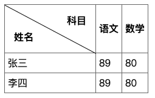

css表格怎么画斜线，怎么精准计算斜线rotate角度
这篇文章发布于 2020/09/24，归类于 CSS
标签：
css表格画斜线，css计算斜线角度，直角三角形给定直角边计算斜边角度
在最近的需求中，有个表格表头里有斜线，我特意翻了 HTML5权威指南 的笔记，发现并没有介绍怎么画表头的斜线。找了下网上的实现，一般都是通过 css 来实现，使用 after 或者特定 span 画一条直线，然后通过 rotate 来旋转成斜线效果。这里涉及到怎么计算斜线角度，会用到一点点数学的知识

在线预览地址: 表格画斜线 | github
先来看两个数学公式
- 计算斜线的长度。勾股定理 a² + b² = c²
/* 斜边边长 */
/* Math.sqrt(Math.pow(width, 2) + Math.pow(height, 2)) */
/* Math.sqrt(Math.pow(150, 2) + Math.pow(80, 2)) = 170 */- 根据th单元格的宽高计算斜线的rotate角度。给定直角三角形的边长，怎么计算角度? 这里我们知道宽高，不知道斜边边长,假设角度A，正切tanA = 对边(高) / 邻边(宽)，我们知道这个角度A的正切值，怎么反向计算A的角度呢。就需要用到反正切函数 Math.atan了，他会返回一个弧度值。在JS中 180度对应的值为 Math.PI，计算出来的值乘以 (180 / Math.PI) 就是可以在css中使用的度数了，单位为 deg
/* 角度计算公式 */
/* Math.atan(height / width) * 180 / Math.PI */
/* Math.atan(80 / 150) * 180 / Math.PI = 28.072486935852954 */完整代码如下
<!DOCTYPE html>
<html lang="en">
<head>
<meta charset="UTF-8">
<meta name="viewport" content="width=device-width, initial-scale=1.0">
<title>Document</title>
<style>
/* 基本表格元素 */
table {
border-collapse: collapse;
}
th,td {
border: 1px solid #666;
padding: 5px;
}
/* th单元格 */
.slash-wrap {
position: relative;
box-sizing: border-box;
width: 150px;
height: 80px;
}
/* 斜线 */
.slash {
position: absolute;
display: block;
top: 0;
left: 0;
/* 斜边边长 */
/* Math.sqrt(Math.pow(width, 2) + Math.pow(height, 2)) */
/* Math.sqrt(Math.pow(150, 2) + Math.pow(80, 2)) = 170 */
width: 170px;
height: 1px;
background-color:#000;
/* 旋转角度计算公式 */
/* Math.atan(height / width) * 180 / Math.PI */
/* Math.atan(80 / 150) * 180 / Math.PI = 28.072486935852954 */
transform: rotate(28.072486935852954deg);
transform-origin: top left;
}
/* 左下角文字 */
.left {
position: absolute;
/* 左下角 left:0; bottom: 0; */
left: 15px;
bottom: 15px;
}
/* 右上角文字 */
.right {
position: absolute;
/* 右上角 right:0; top: 0; */
right: 15px;
top: 15px;
}
</style>
</head>
<body>
<div>
<table>
<tr>
<th class="slash-wrap">
<span class="left">姓名</span>
<span class="slash"></span>
<span class="right">科目</span>
</th>
<th>语文</th>
<th>数学</th>
</tr>
<tr>
<td>张三</td>
<td>89</td>
<td>80</td>
</tr>
<tr>
<td>李四</td>
<td>89</td>
<td>80</td>
</tr>
</table>
</div>
</body>
</html>参考：